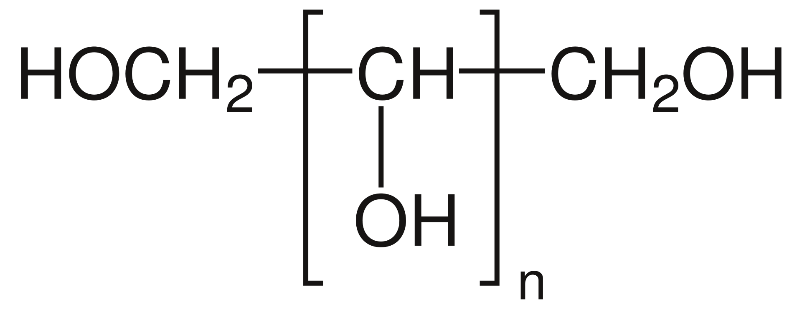

Zuckerersatzstoffe
Einleitung
Alternative für Zucker?
Heutzutage wird in vielen Lebensmitteln versucht, den Zuckergehalt zu senken, da der öffentliche Druck in den letzten Jahren gewachsen
ist. Üblicher Haushaltszucker hat viele gesundheitsschädliche Folgen für den Körper, deswegen werden Lebensmittel immer mehr mit
anderen Zuckerersatzstoffen gesüßt. Zuckerersatzstoffe ist der Überbegriff von Alternativmittel für Zucker. Es ist unterteilt in die
Kategorien Zuckeraustauschstoffen und Süßstoffe.
Süßstoffe
Süßstoffe werden häufig in Low Carb Rezepten und Light-Produkten verwendet, da sie keine Kohlenhydrate besitzen. Bei Tierversuchen gab
es
Hinweise das die Zunahme von Süßstoffen die Entstehung von Diabetes fördern könnte, da dies die Begünstigung der Insulinresistenz
fördert. Bei Menschen konnte dies jedoch noch nicht bestätigt werden. Mehrere Studien bestätigen außerdem das Diät-Softdrinks das
Risiko von Herz-Kreislauf-Erkrankungen steigern können. Dies aber nur beim täglichen Konsum. Im haushaltsüblichen Mengen sollten aber
keine Nebenwirkungen auftreten, somit sind Süßstoffe unbedenklich verzehrbar.
Synthetische Süßstoffe
Beispiele
Ein synthetischer Süßstoff ist zum Beispiel Cyclamat, das Natriumsalz der Cyclohexylsulfaminsäure. Es hat die ungefähr 30 male
Süßkraft normalen Haushaltszuckers.
Aspartam ist das Methylester des Dipeptids L-Asp-L-Phe und hat ungefähr den gleichen Energiegehalt wie Haushaltszucker, da es jedoch ca. 200 mal süßer ist, wird es in geringeren Mengen verwendet und sorgt somit für einen geringeren Energiegehalt in Lebensmitteln. Es ist allerding gefährlich für Kinder mit der Erbkrankheit Phenylketonurie, weshalb immer gekennzeichnet werden muss das eine Phenylalanin Quelle enthalten ist.
Aspartam ist das Methylester des Dipeptids L-Asp-L-Phe und hat ungefähr den gleichen Energiegehalt wie Haushaltszucker, da es jedoch ca. 200 mal süßer ist, wird es in geringeren Mengen verwendet und sorgt somit für einen geringeren Energiegehalt in Lebensmitteln. Es ist allerding gefährlich für Kinder mit der Erbkrankheit Phenylketonurie, weshalb immer gekennzeichnet werden muss das eine Phenylalanin Quelle enthalten ist.
Pflanzliche Süßstoffe
Der Süßstoff Stevia
Der Lebensmittelzusatzstoff E960 der seit 2011 in Europa zugelassen ist, ist ein natürlicher Süßstoff der aus einer aus Südamerika
stammenden Pflanze hergestellt wird. Um den Süßstoff zu erhalten, müssen allerdings die Blätter in einem Labor chemisch behandelt
werden.
Der Süßstoff Stevia gilt als gesunde Alternative für Zucker, da er keinen Einfluss auf den Blutzuckerspiegel, keine Kalorien liefert und auch nicht schädlich für die Zähne ist. Leider hat dieses Süßungsmittel einen Bitteren Beigeschmack und ist 300-mal so süß wie Glucose. Stevia ist ein Stoffgemisch bestehend aus Steviolglycosiden, Rebaudiosid A Diterpenglycosid und weiteren Steviolglycosiden. Um dem bitteren Beigeschmack entgegenzuwirken, werden die süßenden Bestandteile isoliert und anschließend kompositioniert.
Der Süßstoff Stevia gilt als gesunde Alternative für Zucker, da er keinen Einfluss auf den Blutzuckerspiegel, keine Kalorien liefert und auch nicht schädlich für die Zähne ist. Leider hat dieses Süßungsmittel einen Bitteren Beigeschmack und ist 300-mal so süß wie Glucose. Stevia ist ein Stoffgemisch bestehend aus Steviolglycosiden, Rebaudiosid A Diterpenglycosid und weiteren Steviolglycosiden. Um dem bitteren Beigeschmack entgegenzuwirken, werden die süßenden Bestandteile isoliert und anschließend kompositioniert.
Zuckeraustauschstoffe

Struckturformel der Alditole
Bei allen Zuckeraustauschstoffen handelt es sich um Chemische Verbindungen der Stoffklasse der Alditole (Zuckeralkohole). Alditole entsprechen der allgemeinen Summenformel HOCH2[CH(OH)]nCH2OH. Sie können durch die Reduktion von Ketosen oder Aldosen hergestellt werden.
Das gleiche Alditol kann aus der L und der D Form der gleichen Aldose hergestellt werden, da die Stereozentren der Aldosen von der Reaktion nicht betroffen sind. Bei der Reduktion einer Ketose können zwei verschiedene Alditole entstehen, da die Reaktion im Stereozentrum stattfindet.
Reduktion von D-Glucose (1) und L-Glucose (2) zu Sorbit (3)
Reduktion von D-Fructose (2) zu den Alditolen D-Sorbit (1) und D-Mannit (3)
Sorbit
Einer der häufigsten Zuckeraustauschstoffe
 Struckturformel von Sorbitol
Struckturformel von Sorbitol
Xylit
Der Birkenzucker
Xylit ist ein Süßungsmittel, das in der Natur in Früchten, Beeren und weiteren Pflanzen vorkommt. Den Trivialnamen Birkenzucker hat
Xylit von der ursprünglichen Herstellungsmethode aus Birkenrinde bekommen, jedoch kann Xylit auch aus Rückständen der
Zuckerherstellung hergestellt werden. Die Industrielle Herstellung von Xylose zu Xylit ist sehr aufwendig, da sie hohe Temperaturen
und Säuren oder Laugen benötigt. Da Xylit ein häufiges Zwischenprodukt des Kohlenhydratstoffwechsels ist, kommt es in alles
Gewebearten vor.
Erythrit
Ein Zuckeraustauschstoff aus der Natur
Bei Erythrit handelt es sich um einen geruchlosen kristallinen Feststoff. Es bestitz gegenüber anderen Alditolen den Vorteil, dass es
besser verdaut werden kann. In der Industrie wird es durch die mikrobakterielle Umwandlung von Kohlenhydraten hergestellt, da andere
chemische Prozesse zu teuer und aufwendig wären. Erythrit lässt sich in Pilzen, Obst und Käse finden.
Quiz
Wie gut kennst du dich aus?
Quellen
Subtitle
Zuckerersatzstoffe - Ichf-gesund.de
Zuckeraustauschstoffe - Wikipedia
Süßkraft - Wikipedia
Alditole - Wikipedia
Zuckerersatz - NDR
Zuckerersatz - Gesundheit.de
Zuckerersatzstoffe -
BKK24
Süßstoffe - Chemieunterricht.de
Alternativen zu
Zucker - Menschen-mit-diabetes.de
Technische Süße ohne Zucker -
Chemieunterricht.de